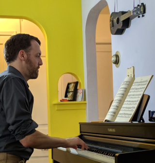

Home |
Contact |
Requirements |
Equipment |
Recording

Lesson Requirements:
- parent or guardian must be at all in-person lessons
- piano in good working order
- method book
- provided for free digitally
- client can either print the digital book or use a tablet with notation capability
- printed book must be double-sided so duets show on facing pages
- lesson notebook for writing assignments
- videoconferencing device
- Google Meet
- meeting link sent by email
- occasionally other students may be invited to online lessons to provide performance opportunities
- metronome
- good Internet connection
- lesson fees paid ahead in 4 or 13 week blocks
- twenty-six 12-1/2 minute lessons (13 weeks): $162.50
- eight 12-1/2 minute lessons (4 weeks): $60
- during the school year, lessons on non-school days are optional
- lesson times can be moved or refunded ONLY in the following cases:
- students prepaying for 13 weeks may change lesson time once
- rescheduling allowed if Internet issues starting during a lesson exceed six minutes in total
- death in the immediate family
- illness requiring professional care
- moving more than 20 miles away
- immobilized finger(s)
- summer policy
- when the school district switches to summer break, lessons switch to once per week.
- if a student has prepaid for lessons and summer break starts during their lesson block, the student will pick one of the two weekly lesson times to carry into the summer.
- if a student has prepaid for lessons and summer break ends, the student will pick a second weekly lesson time to carry into the school year.
- per-lesson rates are the same in the summer, but prepayment for eight lessons lasts for eight weeks of summer lessons.
- students may not pre-pay for twenty-six lessons during the summer.
- ukulele (optional)
- $45 deposit is refundable if returned with only light wear-and-tear